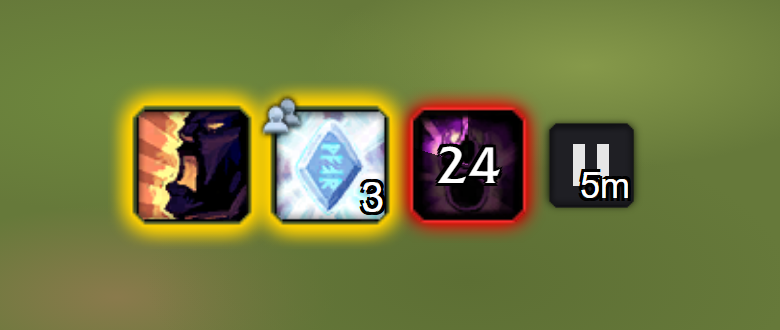
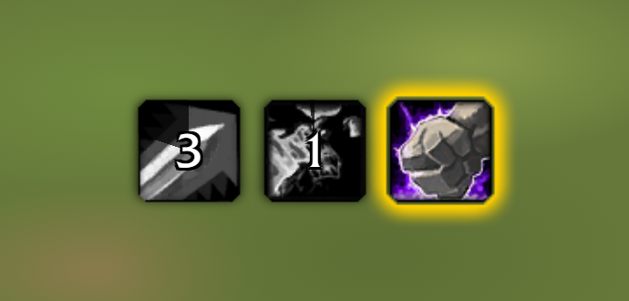
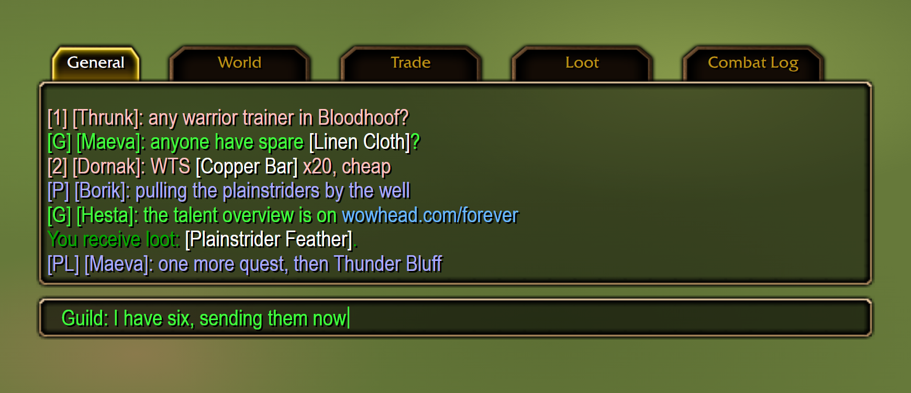
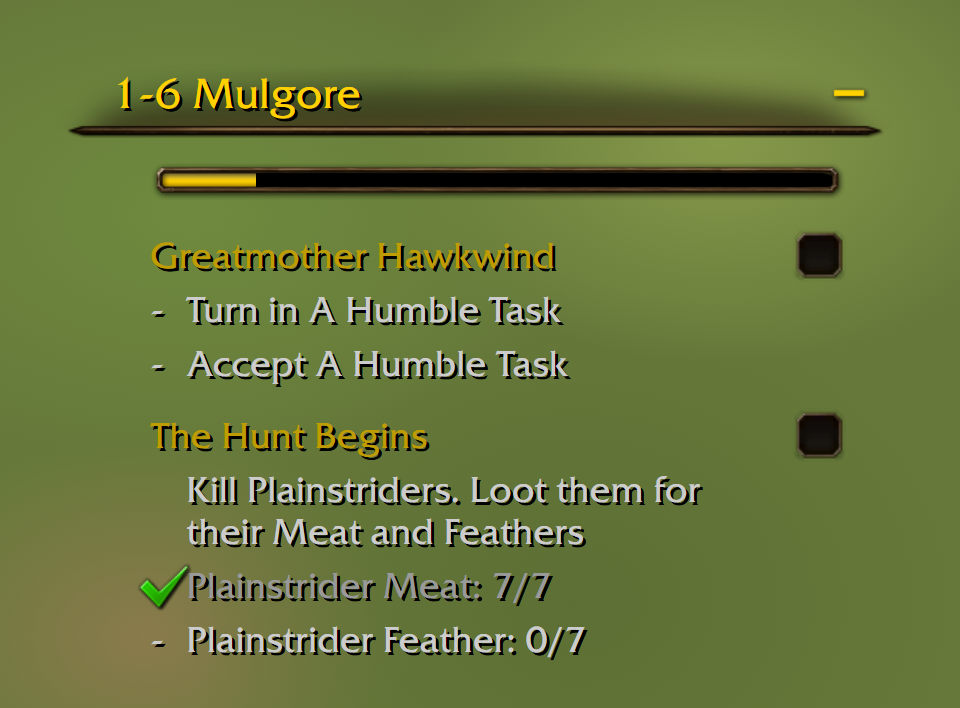
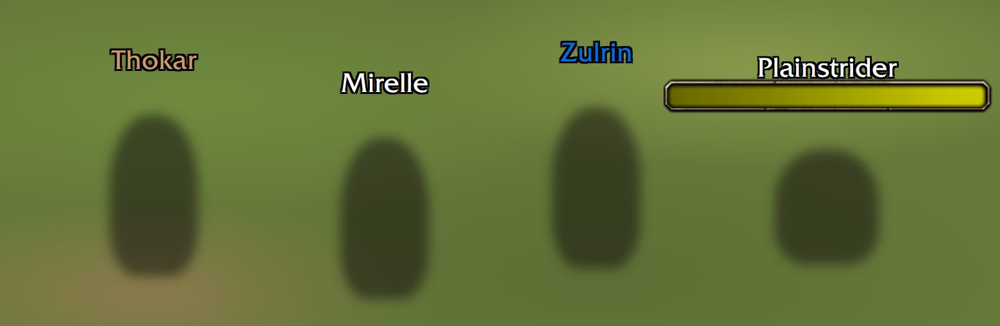
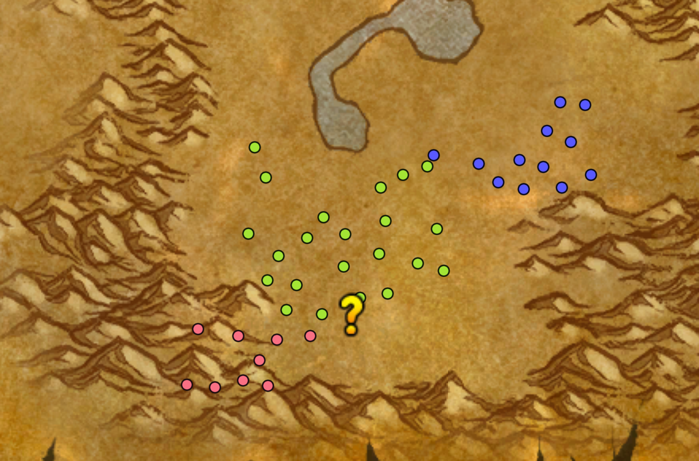
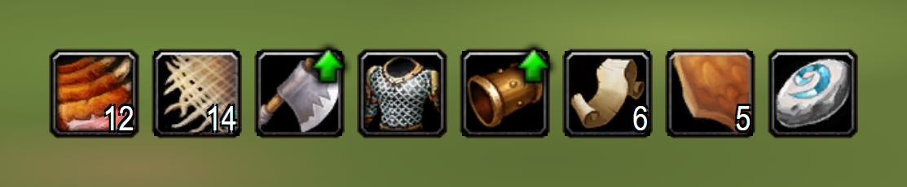
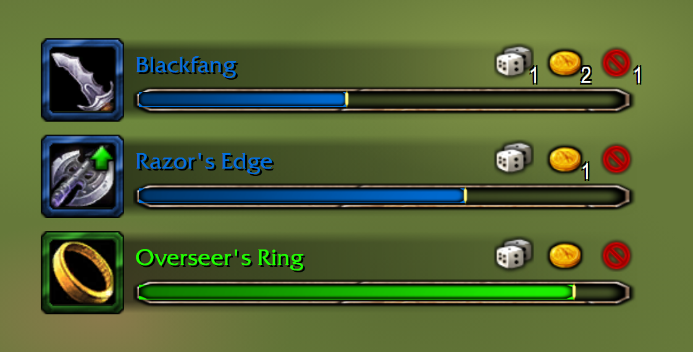
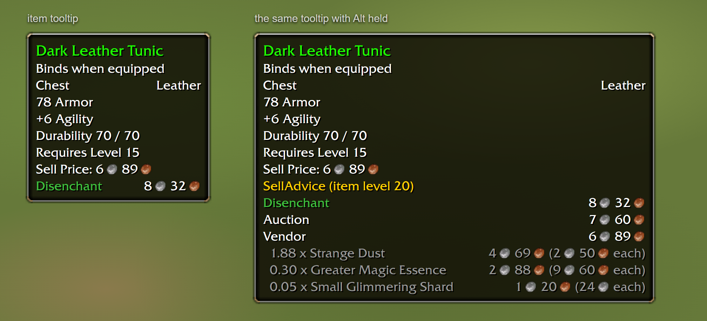
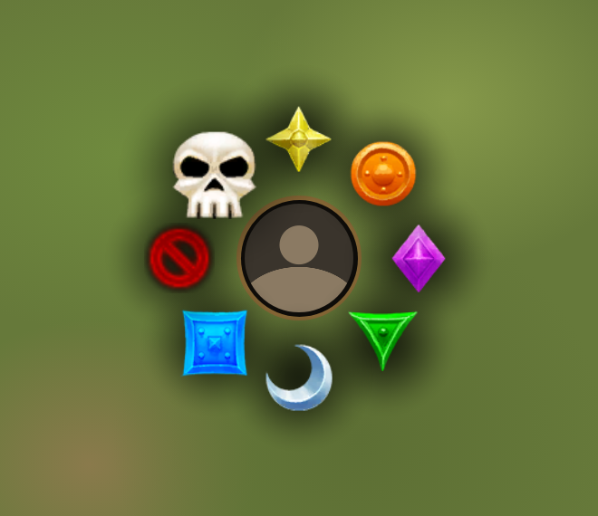

BuffDrop 1.0
In combat, a pulsing grey icon the moment a buff you keep up on yourself falls off: Battle Shout, shaman shields, seals, Slice and Dice, Inner Fire, armors, Thorns, aspects. /buffdrop to move it.
30 small addons for World of Warcraft Forever, each on its own. Every download is one zip with one folder.
To install: unzip into the game's Interface/AddOns folder, so that it holds a folder with the addon's name, then /reload or restart the game.
In combat, a pulsing grey icon the moment a buff you keep up on yourself falls off: Battle Shout, shaman shields, seals, Slice and Dice, Inner Fire, armors, Thorns, aspects. /buffdrop to move it.
Shows an icon, and pings, while a buff you chose is missing on you or your party. Configured from a tab in the Cooldown Manager's settings. /bn

A list beside the inbox of every item and sum of money in your mail: take all, the money, or the rows you mark. One take at a time, C.O.D. never paid, stops cleanly on full bags. /bulkinbox
Scrolling combat text in two columns: damage and healing you take fall on the left, your own damage and healing rise on the right with the icon of the spell that made them. /cscroll
Unit tooltips you can read at a glance: one line per quest objective naming only who still needs it, names in class colour, and item and spell IDs while Alt is held.
An icon pops up a few seconds before an ability you chose comes off cooldown, and stays a moment once it is ready. Configured from a tab in the Cooldown Manager's settings. /cdn

A list of what your characters can craft, best profit first, from Auctionator's scanned prices: what the item sells for after the auction house's cut, less what the materials cost at the auction house or a vendor. Each character's recipes are read when it opens a profession window. Click recipes to plan crafts; the Materials pane lists what to buy, with what you own counted, and makes an Auctionator shopping list. /profit. /farm lists raw goods worth farming to sell, with price and supply trends.
With a fishing pole equipped, double-click into the world to cast your line. /fish
The default chat in Forever's own style, with short channel names and one chat setup shared by all your characters. /fchat

WoW Forever's game data for other addons: items, creatures, objects, quests and zones, what drops where and how often, where things stand, who sells and teaches what, and a search over their names. No window of its own. Data from ForeverDB.net (https://foreverdb.net), CMaNGOS classic-db, wowhead, QuestieDB and VMaNGOS.
Leveling guides under the quest tracker. Reads RestedXP and WoW-Pro guides, tracks the quests of the current step, points an arrow and sets the map pin. /fg
Needs files that are not in the download; see the README.

Nameplate tweaks, each one on or off: friendly players show just the name; enemy bars coloured by your threat, and your threat as a number beside them; who each enemy is targeting under its bar; a quest mark on enemies you still need; the level box hidden if you like. /fplates
This version is not released yet.

Quest log and tracking tweaks. Spawn dots for tracked quests on the map and minimap instead of the quest areas and in-progress icons. A soft dark backdrop behind the quest tracker. The XP of completed quests shown on the experience bar. /fq

Records what WoW Forever shows you, for an offline database: what each creature, node and chest gave when looted, what vendors sell, who gives and takes quests and what they reward, creatures' levels and kinds, and where these stand. Game facts only: no names of characters, no realm. /recorder for what it has.
Spotlight for WoW Forever: a floating search bar; type to find any item, creature, object, quest or zone (fuzzy, best first), see its details beside the list: where it drops and how often, who sells it, its auction price, how many you own; where a creature stands and what it drops. Ctrl-K, another key under Key Bindings > AddOns, or /find.
Dragging our addons' frames: their edges and middles snap to the screen's and to each other's, with a guide line where they hold. Shift drags free.
A sparkle over herbs, ore veins, quest objects and lootable objects such as chests as you come near, each kind with its own size, spread, number of glints, brightness, colour and pace. Can also keep the game's own loot sparkle on. /fsparkles
Pawn lite: a green arrow on items that would be an upgrade for your class and spec, in Baganator's bags, quest rewards, vendor windows and LootRolls bars, and /upgrades: the gear that would be an upgrade, slot by slot, with where each piece comes from (quest, drop, vendor, chest or profession; needs QuestieDB). Specs with their own weights, shared per class. /upgradearrow

The debuffs your group's classes should keep on the target, as a column or row of icons: dim while missing, lit with its timer while it is on. Options > AddOns, or /groupdebuffs
Party frames of its own in Forever's bronze bar look: first names on the top edge, dots for Renew, Power Word: Shield, Fear Ward and Weakened Soul, a shaman's totems per element, dispel icons after the name, faded out of range, centred. Raid frames the same, one group per row, sized by the raid. /groupframes to move.
This version is not released yet.
The mana of your group's healers as a column of rows: class icon, name, percentage (or dead or offline), and an icon while drinking, innervated or soulstoned. /healermana to move it.
A short list of what you just picked up: items with how many you now carry, money, reputation, experience and honor, and what your group loots. Each line fades after a few seconds. /lootfeed
Movable group loot roll bars in the XLoot layout: icon, timer bar with the item name, Need/Greed/Pass with how many chose each and who (hover). /lootrolls

Your pet's buffs and debuffs as small icons under the pet frame, drawn by the game's own aura buttons.
One line in item tooltips: disenchant, smelt, vendor or auction, whichever brings the most, from Auctionator's scanned prices. A gold coin marks the quest choice worth the most. With full bags, a red cross in Baganator marks the item cheapest to drop. Hold Alt for the workings. /sell lists everything your characters own, best to sell first.

Modifier-click or double-click a unit to pick its raid target icon from a radial menu around the cursor. Out of combat only; key bindings work in combat.

The debuffs you put on your target as a free-standing row of icons that the mouse passes through. /targetdebuffs to move it.
Puts the game's alert popups (loot you won, achievements and the like) where you want them. /toastanchor
Shows how long each totem has left on the totem bar's slots.
Alternates minimap tracking between Find Herbs and Find Minerals every few seconds, so both kinds of node show up. /ts